Ejercicios de límites de sucesiones
1Hallar el término general de las siguientes sucesiones:
1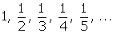
2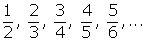
3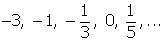
4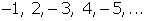
5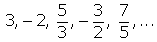
6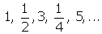
7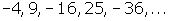
8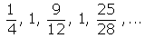
2Estudia la monotonia, la convergencia o divergencia y las cotas (si existen) de las siguientes sucesiones:
1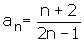
2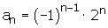
3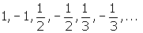
3Escribe una sucesión:
1Monótona no acotada
2Acotada, no monótona
3No acotada, no monótona
4No acotada, convergente
5Acotada, divergente
6Acotada, no convergente
7No monótona, convergente
8No monótona, divergente
4Hallar los ángulos de un cuadrilátero convexo, sabiendo que están en progresión aritmética, siendo d= 25º.
5El cateto menor de un triángulo rectángulo mide 8 cm. Calcula los otros dos, sabiendo que los lados del triángulo forman una progresión aritmética.
6Uniendo los puntos medios de los lados de un cuadrado de lado l, se obtiene otro cuadrado, en el que volvemos a hacer la misma operación, y así se continua indefinidamente. Calcular la suma de las áreas de los infintos cuadrados.
7Demuestra que la sucesión 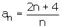 tiene límite 2. Averigua los términos cuya distancia a 2 es menor que 0.1.
8Probar que la sucesión 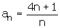 tiene por limite 4 y averiguar cuántos términos de la sucesión están fuera del entorno (4 - 0.001, 4 + 0.001).
9Demuestra que la sucesión 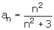 tiene por limite 1 y averiguar cuántos términos de la sucesión están fuera del E (1 , 0.001).
10Demuestra que la sucesión 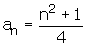 tiene por limite +∞. Y calcula cuántos términos de la sucesión son menores que un millón.
Nota: Infinito no es un número, las operaciones que realizamos con ∞ son simplemente un recurso para ayudarnos a resolver límites.
11Calcula los siguientes límites:
1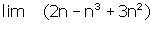
2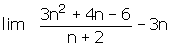
3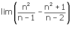
12Calcula los siguientes límites:
1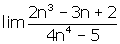
2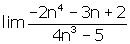
3
4
5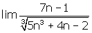
6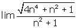
7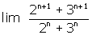
13Calcula los siguientes límites:
1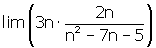
2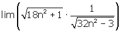
14Calcula los siguientes límites:
1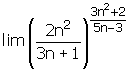
2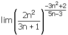
3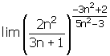
4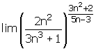
5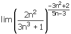
6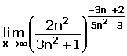
7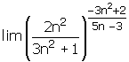
8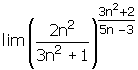
15Calcula los siguientes límites:
1
2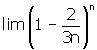
16Calcula los siguientes límites:
1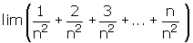
2
3
- 1
- 2
- 3
- 4
- 5
- 6
- 7
- 8
- 9
- 10
- 11
- 12
- 13
- 14
- 15
- 16
Nota: Infinito no es un número, las operaciones que realizamos con ∞ son simplemente un recurso para ayudarnos a resolver límites.
Ejercicio 1 resuelto
Hallar el término general de las siguientes sucesiones:
1
El numerador es constante.
El denominador es una progresión aritmética de d= 1.

2
El numerador es una progresión aritmética con una d= 1.
El denominador es una progresión aritmética con una d = 1.

3
En esta sucesión se han simplificado algunas fracciones.
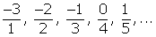
El numerador es una progresión aritmética con una d= 1.
El denominador es una progresión aritmética de d= 1.
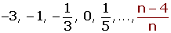
4
Si prescindimos del signo es una progresión aritmética con una d= 1.
Por ser los términos impares los negativos multiplicamos por (-1)n.
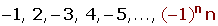
5
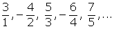
Si prescindimos del signo, el numerador es una progresión aritmética con una d= 1.
El denominador es una progresión aritmética de d= 1.
Por ser los términos pares los negativos multiplicamos por (-1)n+1.
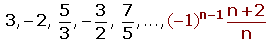
6
Es una sucesión oscilante.
Los términos impares forman progresión aritmética con una d= 1, si no tenemos en cuenta los términos pares.
El denominador de los términos pares forman progresión aritmética con una d= 1.
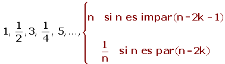
7
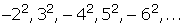
Si prescindimos del signo y del exponente tenemos una progresión aritmética con una d= 1.
Por estar los términos al cuadrado, tenemos que elevar el término general al cuadrado.
Por ser los términos impares los negativos multiplicamos por (-1)n.
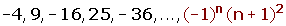
8
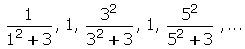
Es una sucesión oscilante.
El numerador de los términos impares forman progresión aritmética con una d= 1, si no tenemos en cuenta los términos pares.
Por estar los términos al cuadrado, tenemos que elevar el término general al cuadrado.
El primer sumando del denominador (prescindiendo del cuadrado) es una progresión aritmética de d= 1 (sin contar los términos pares).
El término general lo tenemos que elevar al cuadrado y sumarle 3.
Los términos pares forman una sucesión constante.
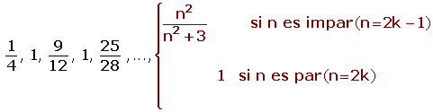
Ejercicio 2 resuelto
Estudia la monotonia, la convergencia o divergencia y las cotas (si existen) de las siguientes sucesiones:
1
3, 4/3, 1, 6/7,...
La sucesión va decreciendo.
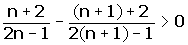
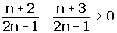
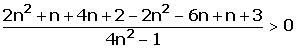
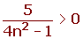
Para cualquier valor de n se cumple la desigualdad.
Es monotona estrictamente decreciente.
a1= 3
a3= 1
a1000= 0.5012506253127
a1000 000 = 0.5000012500006
El límite es 0.5
Sucesión convergente
Por ser decreciente, 3 es una cota superior, el máximo.
0.5 es una cota inferior, el ínfimo o extremo inferior.
Por tanto la sucesión está acotada.
0.5 < a n ≤ 3
2
2, −4, 8, −16, ...
No es monótona.
No es convergente ni divergente.
No está acotada.
3
No es monótona.
Es convergente porque el límite = 0.
Está acotada superiormente, 1 es el máximo.
Está acotada inferiormente, -1 es el mínimo.
Está acotada.
−1 ≤ an ≤ 1
Ejercicio 3 resuelto
Escribe una sucesión:
1Monótona no acotada
3, 5, 7, 9, 11, ...
2Acotada, no monótona
2, -2, 2, -2, 2, ...
3No acotada, no monótona
1, -2, 1, -3, 1,...
4No acotada, convergente
Es imposible
5Acotada, divergente
Es imposible
6Acotada, no convergente
-5, 5, -5, 5, -5, ...
7No monótona, convergente
.0.1, -0.1, 0.01, -0.01, 0.001, -0.001, ...
8No monótona, divergente
5, 1, 6, 2, 7, 3, ...
Ejercicio 4 resuelto
Hallar los ángulos de un cuadrilátero convexo, sabiendo que están en progresión aritmética, siendo d= 25º.
La suma de los ángulos interiores de un cuadrilátero es 360º.
360= ( a1 + a4) · 4/2
a4= a1 + 3 · 25
360= ( a1 + a1 + 3 · 25) · 4/2
a1 = 105/2 = 52º 30' a2 = 77º 30'
a3 = 102º 30' a4 = 127º 30'
Ejercicio 5 resuelto
El cateto menor de un triángulo rectángulo mide 8 cm. Calcula los otros dos, sabiendo que los lados del triángulo forman una progresión aritmética.
El cateto menor de un triángulo rectángulo mide 8 cm. Calcula los otros dos, sabiendo que los lados del triángulo forman una progresión aritmética.
a2 = 8 + d; a3 = 8 + 2d
(8 + 2d)2 = (8 + d)2 + 64
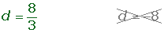
Ejercicio 6 resuelto
Uniendo los puntos medios de los lados de un cuadrado de lado l, se obtiene otro cuadrado, en el que volvemos a hacer la misma operación, y así se continua indefinidamente. Calcular la suma de las áreas de los infintos cuadrados.
Ejercicio 7 resuelto
Demuestra que la sucesión tiene límite 2. Averigua los términos cuya distancia a 2 es menor que 0.1.
A partir de a41 la distancia a 2 será menor que una decima.
Ejercicio 8 resuelto
Probar que la sucesión tiene por limite 4 y averiguar cuántos términos de la sucesión están fuera del entorno (4 - 0.001, 4 + 0.001).
Quedan fuera del entorno los mil primeros términos de la sucesión.
Ejercicio 9 resuelto
Demuestra que la sucesión tiene por limite 1 y averiguar cuántos términos de la sucesión están fuera del E (1 , 0.001).
Los primeros 54 términos quedan fuera del entorno.
Ejercicio 10 resuelto
Demuestra que la sucesión tiene por limite +∞. Y calcula cuántos términos de la sucesión son menores que un millón.
No llegan al millón los 1999 primeros términos de la sucesión.
Ejercicio 11 resuelto
Calcula los siguientes límites:
1
2
3
Ejercicio 12 resuelto
Calcula los siguientes límites:
1
2
3
4
5
6
7
Ejercicio 13 resuelto
Calcula los siguientes límites:
1

2
Ejercicio 14 resuelto
Calcula los siguientes límites:
1
2

3
4
5
6
7
8
Ejercicio 15 resuelto
Calcula los siguientes límites:
1
2
Ejercicio 16 resuelto
Calcula los siguientes límites:
1
2
3
 Ejercicios
Ejercicios